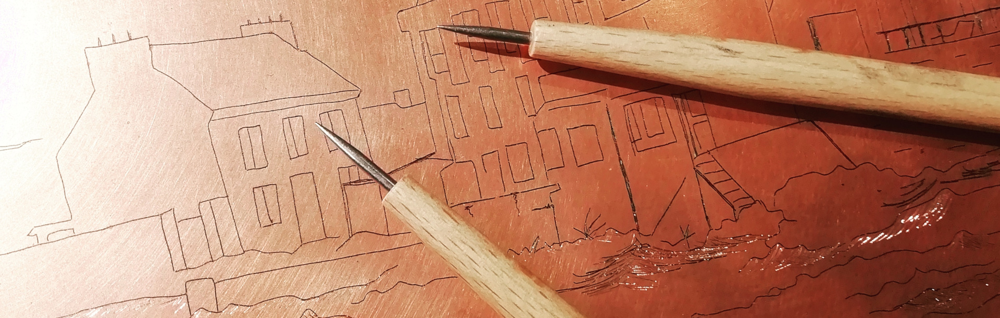
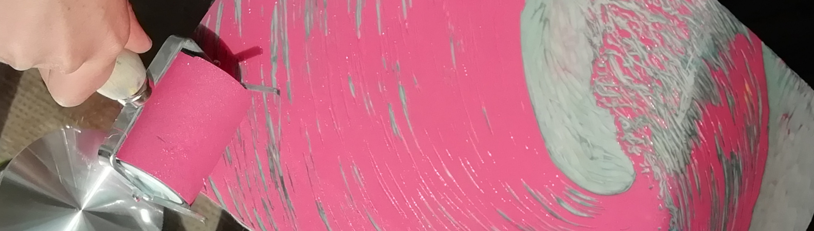
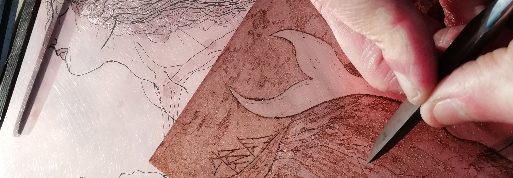

coucou, c’est l’atelier des 3 citrons
L’atelier des 3 citrons est un atelier de gravure associatif et un collectif d’artistes graveurs.
Le but ? Graver ensemble — parce qu’à plusieurs on grave plus loin ; échanger et transmettre la diversité des techniques dans la joie et la bonne humeur !

On va tous graver !
Les graveurs expérimentés sont les bienvenus à l’atelier des 3 citrons pour mener à bien leurs recherches artistiques, en toute autonomie (voir les formules de pratique libre).
Ils peuvent utiliser les outils et la chimie mis à disposition par l’association, notamment une presse taille-douce Reig dotée d’un plateau de 55 x 120 cm. Sont aussi disponibles des outils pour la taille-douce directe, des gouges pour la taille d’épargne, la chimie pour l’eau-forte sur cuivre (vernis, colophane pour les aquatintes, perchlorure de fer pour les morsures) et une table d’encrage chauffante.

Transmettre
Les artistes du collectif proposent des cours pour toute personne souhaitant s’initier au plaisir magique de graver et imprimer. Dans le cadre intimiste de l’atelier, ces cours en petit comité (maximum deux élèves) sont l’occasion de s’initier à la gravure en maniant gouges et pointes pour la première fois. Ils et elles interviennent aussi en milieu scolaire, périscolaire ou toute autre structure souhaitant faire découvrir la gravure à ses usagers.
L’atelier des 3 citrons participe régulièrement à des événements pour faire découvrir la gravure et les œuvres des artistes du collectif : expositions, festivals, rencontres…

Infos pratiques
Contactez-nous par mail ou sur instagram à toutes fins utiles !
L’adhésion annuelle à l’association (10 euros) est obligatoire pour participer aux activités proposées à l’atelier.
L’atelier des 3 citrons est installé à Quéven, dans le Morbihan, près de Lorient.
- En voiture : N165, sortie Quéven, stationnement possible dans la rue.
- En bus : T4 en provenance de Lorient, arrêt Bel Air (ou Ville de Toulouse en marchant un peu).
- À vélo : depuis Lorient, Plœmeur et Pont Scorff, itinéraires sur voies cyclables dédiées, abri vélo disponible sur place.